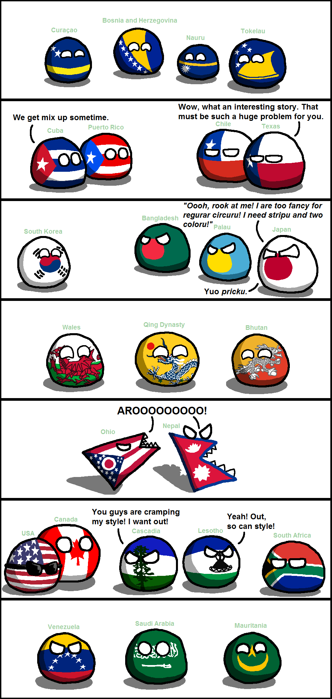

vat is polunball?
polunball is pretty coolings. they always talkings in broken english,likings this, and they are commonly refferings to "countryballs." it started into webcomics in 2009, and now has page on wikipedia! some of countryballs are not into balls. some squares and other shapes. they saying things like: 'gib clay!' or like 'börk börk.'
this is comic of day hokay
countryballs' characteristics
- most polandballs are balls
- some are cubes, rawrs, bricks, etc.
- anchluss is a word youll commonly see around the community. it means annex, primaraly from reichtangle to polun.
main polandballs
poland is ze main one, obviously, then reichtangle, usa eats a lot, sweden with börk börk, and russia is main. click on links to read more about them.